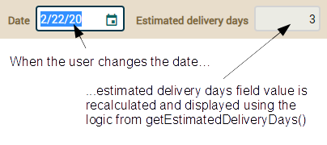

openxava / documentación / Lección 16: Sincronizar propiedades persistentes y calculadas
Curso:
1. Primeros pasos |
2. Modelo básico del dominio (1) |
3. Modelo básico del dominio (2) |
4. Refinar la interfaz de usuario |
5. Desarrollo ágil |
6. Herencia de superclases mapedas |
7. Herencia de entidades |
8. Herencia de vistas |
9. Propiedades Java |
10. Propiedades calculadas |
11. @DefaultValueCalculator en colecciones |
12. @Calculation y totales de colección |
13. @DefaultValueCalculator desde archivo |
14. Evolución del esquema manual |
15. Cálculo de valor por defecto multiusuario |
16. Sincronizar propiedades persistentes y calculadas |
17. Lógica desde la base de datos |
18. Validando con @EntityValidator |
19. Alternativas de validación |
20. Validación al borrar |
21. Anotación Bean Validation propia |
22. Llamada REST desde una validación |
23. Atributos en anotaciones |
24. Refinar el comportamiento predefinido |
25. Comportamiento y lógica de negocio |
26. Referencias y colecciones |
A. Arquitectura y filosofía |
B. Java Persistence API |
C. Anotaciones |
D. Pruebas automáticas
En la lección anterior aprendimos cómo definir propiedades por defecto para el desarrollo en ambientes multiusuario, utilizando
retrollamadas JPA. Veremos ahora cómo sincronizar tanto propiedades calculadas como persistentes.
Sincronizar propiedades persistentes y calculadas
Como ya hemos aprendido, las propiedades calculadas no permiten filtrar ni ordenar en la lista, por lo que preferimos propiedades persistentes con
@Calculation. Sin embargo, las propiedades
@Calculation sólo sirven para cálculos aritméticos simples. Cuando necesitas bucles, condiciones, leer de la base de datos, conectar a servicios externos o cualquier lógica compleja,
@Calculation no es suficiente. Para estos casos necesitas escribir la lógica con Java, en el getter. Pero, ¿cómo podemos hacer esto y al mismo tiempo mantener la ordenación y el filtrado en la lista? Fácil, puedes usar dos propiedades, una calculada y otra persistente, y mantenerlas sincronizadas usando los métodos de retrollamada de JPA. Vamos a aprender como hacerlo en esta sección.
Añadamos un nueva propiedad a la entidad Order llamada estimatedDeliveryDays:
@Depends("date")
public int getEstimatedDeliveryDays() {
if (getDate().getDayOfYear() < 15) {
return 20 - getDate().getDayOfYear();
}
if (getDate().getDayOfWeek() == DayOfWeek.SUNDAY) return 2;
if (getDate().getDayOfWeek() == DayOfWeek.SATURDAY) return 3;
return 1;
}
Esto es una propiedad calculada pura, un getter con lógica Java. Calcula los día estimados de entrega usando date como fuente. Este caso no puede solucionarse con @Calculation que solo soporta operaciones aritméticas básicas.
También hemos de añadir estimatedDeliveryDays a la declaración de la @View por defecto en el código de Order:
@View(extendsView="super.DEFAULT",
members=
"estimatedDeliveryDays," + // AÑADE ESTA LÍNEA
"invoice { invoice }"
)
...
public class Order extends CommercialDocument {
El resultado es este:

El valor se recalcula cada vez que la fecha cambia en la interfaz de usuario gracias a el @Depends("date") en estimatedDeliveryDays. Todo esto está muy bien, pero cuando vas al modo lista no puedes ordenar ni filtrar por días estimados de entrega. Para solucionar este problema añadimos una segunda propiedad, esta vez persistente. Agrega el siguiente código a tu entidad Order:
@Column(nullable=false)
@org.hibernate.annotations.ColumnDefault("1")
int deliveryDays;
Ten en cuenta que hemos usado @ColumnDefault("1"), con este truco cuando OpenXava crea la columna tiene 1 como valor predeterminado en lugar de nulo, y nosotros evitamos un feo error con nuestra propiedad int. Sí, en muchos casos un valor por defecto a nivel de base de datos es una alternativa para hacer una ACTUALIZACIÓN sobre la tabla (como hicimos en la lección "Evolución manual del esquema"), aunque tiene el problema de que depende de la base de datos. De todos modos, esta disertación de @ColumnDefault es tangencial a nuestro problema de sincronización calculada/persistente, no es del todo necesaria, solo es conveniente para nuestra propiedad int. Esta nueva propiedad deliveryDays contendrá el mismo valor que estimatedDeliveryDays, pero deliveryDays será persistente con su columna correspondiente en la base de datos. El truco está en mantener sincronizada la propiedad deliveryDays. Usaremos los métodos de retrollamadas JPA en la clase Order. Basta con asignar el valor de estimatedDeliveryDays a deliveryDays cada vez que se crea un nuevo pedido (@PrePersist) o se actualiza (@PreUpdate). Agreguemos un nuevo método recalculateDeliveryDays() a la entidad de pedido anotada con @PrePersist y @PreUpdate, por lo tanto:
@PrePersist @PreUpdate
private void recalculateDeliveryDays() {
setDeliveryDays(getEstimatedDeliveryDays());
}
Básicamente, el método recalculateDeliveryDays() se llama cada vez que se registra una entidad de Order en la base de datos por primera vez y cuando se actualiza el pedido. Puedes probar el módulo Order con este código, y verás como cuando se crea o modifica un pedido, la columna de la base de datos para deliveryDays se actualiza correctamente después de guardar, lista para ser utilizada en procesamiento masivo y disponible para ordenar y filtrar lista.